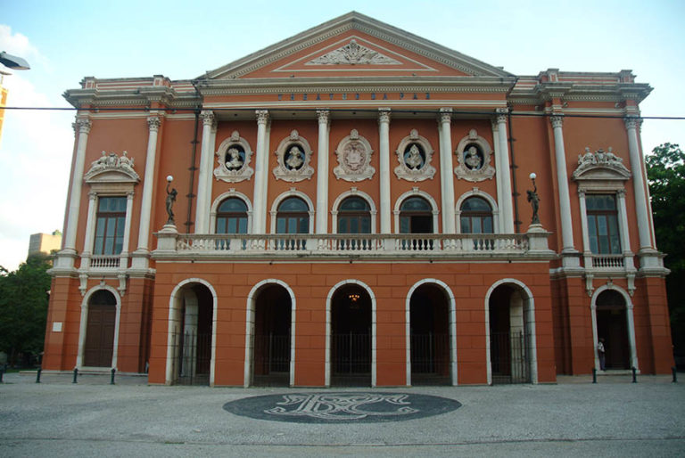

No centro da cidade,uma área aparentemente miserável que antes serviu de cemitério e depósito de armas,sofreu uma reviravolta durante o ciclo da borracha,época onde o Pará se encontrava em um crescimento econômico tão grande a ponto de chamar a atenção de todo o Brasil e mundo afora, mas em meio a todo esse crescimento o estado se encontrava sem muitas atrações,e nem sequer possuia um espaço apropriado para apreciar a sexta arte.Então,para atrair ainda mais a atenção do público,foi criado naquele lugar desolado,em 15 de fevereiro de 1878,o primeiro e até hoje maior teatro da região Norte,originalmente chamado de "Nossa Senhora da Paz"(em alusão ao fim da guerra do Paraguai),convidando,desde sua inauguração artistas vindos de diversos paises como Itália,França e Portugal,para mostrar o quanto a Belle Époque estava sendo abundante e Belém realmente era umas das cidades mais ricas do planeta.

Arquitetura
O espaço é repleto de colunas e entradas por fora,por dentro o salão principal possui o formato tradicional italiano de ferradura,podendo conter originalmente mais de mil pessoas (880 atualmente) e ao redor,possui salões,corredores,lustres,piso em mosaico de madeiras nobres,várias esculturas,escadarias e outras peças,algumas revestidas em folha de ouro,o Theatro é uma combinação de elementos que juntos formam uma paisagem luxuosa e arquitetura fora do normal.